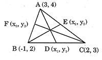
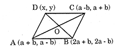

Solved examples
Example 1:
Question:
The Points (0, 0), (0, 10), (8, 16) and (8, 6) are joined to form a quadrilateral. Find the type of the quadrilateral.
Solution:
Let the points A (0, 0), B (0, 10), C (8, 16), and D (8, 6)
Here,
\( \begin{align} AB = \sqrt{0^2 + 10^2} = 10 \\\\[3pt]
BC = \sqrt{8^2 + (16 - 10)^2} = \sqrt{8^2 + 6^2} = 10 \\\\[3pt]
CD = \sqrt{0^2 + (16 - 6)^2} = \sqrt{10^2} = 10 \\\\[3pt]
DA = \sqrt{8^2 + 6^2} = \sqrt{100} = 10 \end{align} \)
Again diagonal AC = \( \sqrt{8^2 + 16^2} = \sqrt{320} \)
and diagonal BD
\( = \sqrt{8^2 + (10 - 6)^2} = \sqrt{8^2 + 4^2} = \sqrt{82} \)
So, AB = BC = CD = DA (side equal)
\( AC \neq BD \) (diagonals not equal)
so, the quadrilateral is a rhombus.
Example 2:
Question:
Find a point equidistant from the points (6, 2), (-1, 3), and (-3, -1).
Solution:
Let P(x, y) be the required point equidistant from the given points A (6, 2), B (-1, 3), C (-3, -1)
\( \begin{align} \Rightarrow PA^2 = PB^2 \\\\[3pt]
\Rightarrow (x - 6)^2 + (y - 2)^2 = (x + 1)^2 + (y - 3)^2 \\\\[3pt]
\Rightarrow x^2 - 12x + 36 + y^2 - 4y + 4 = x^2 + 2x + 1 + y^2 - 6y + 9 \\\\[3pt]
\Rightarrow x + 2y = 0 \\\\[3pt]
and \ PA^2 = PC^2 \\\\[3pt]
\Rightarrow (x - 6)^2 + (y - 2)^2 = (x + 3)^2 + (y + 1)^2 \\\\[3pt]
\Rightarrow x^2 - 12x + 36 + y^2 - 4y + 4 = x^2 + 6x + 9 + y^2 + 2y + 1 \\\\[3pt]
\Rightarrow 3x + y = 5 \end{align} \)
Solving (i) and (ii)
x = 2, y = - 1
Hence, the required point is P(2, -1)
Example 3:
Question:
If (-4, 0), (0, 3), (0, -3), are the vertices of a triangle, then find the shape of the triangle.
Solution:
If A (-4, 0), B (0, 3), and C (0, -3), then
\( \begin{align} AB = \sqrt{(- 4 - 0)^2 + (0 - 3)^2} = \sqrt{25} = 5 \ units \\\\[3pt]
BC = \sqrt{(0 - 0)^2 + (3 + 3)^2} = \sqrt{36} = 6 \ units \\\\[3pt]
AC = \sqrt{(- 4 - 0)^2 + (0 + 3)^2} = \sqrt{25} = 5 \ units \end{align} \)
Since, AB = AC \( \neq \) BC, the triangles is isosceles.
Example 4:
Question:
If the points A (7, 9), B (3, -7) and C (-3, 3) are the vertices of a triangle, then find the measure of \( \angle{C}. \)
Solution:
A (7, 9), B (3, -7), and C (-3, 3) are the given vertices of a triangle.
\( \begin{align} AB^2 = (7 - 3)^2 + (9 + 7)^2 = 4^2 + 16^2 = 272 \\\\[3pt]
BC^2 = (3 + 3)^2 + (- 7 - 3)^2 = 6^2 + 10^2 = 136 \\\\[3pt]
CA^2 = (- 3 - 7)^2 + (3 - 9)^2 = (- 10)^2 + (- 6)^2 = 136 \\\\[3pt]
So, \ AB^2 = BC^2 + CA^2 \end{align} \)
\( \Rightarrow \) ABC is a right - angled triangle with \( \angle{C} = 90^{ \circ} \)
Hence, \( \angle{C} \) measures \( 90^{ \circ} \)
Example 5:
Question:
A, B and C are three collinear points. The coordinates of A and B are (3, 4) and (7, 7) respectively and AC = 10 units. Find the co-ordinates of C.
Solution:
\( AB = \sqrt{(7 - 3)^2 + (7 - 4)^2} = 5 \)
AC = 10
Since A, B and C are collinear,
BC = AC - AB = 5
\( \Rightarrow \) B is the mid-point of AC
If the coordinates of C be (x, y), then mid- point B is
\( \frac{x + 3}{2} = 7 \) and \( \fra{y + 4}{2} = 7 \)
\( \Rightarrow \) x = 11 and y = 10
Hence, the coordinates of C are (11, 10)
Example 6:
Question:
Find the lengths of the medians of a triangle whose vertices are (3, 4), (-1, 2) and (2, 3).
Solution:
Let \( D (x_1, \ y_1), \ E (x_2, \ y_2) \) and \( F(x_3, \ y_3) \) be the mid-points of BC, CA and AB respectively.
The coordinates of the mid-points are

\( \begin{align} D (x_1, \ y_1) = \left( \frac{-1 + 2}{2}, \ \frac{2 + 3}{2} \right) = \left( \frac{1}{2}, \ \frac{5}{2} \right) \\\\[3pt]
E(x_2, \ y_2) = \left( \frac{3 + 2}{2}, \ \frac{4 + 3}{2} \right) = \left( \frac{5}{2}, \ \frac{7}{2} \right) \\\\[3pt]
F(x_3, \ y_3) = \left( \frac{3 - 1}{2}, \ \frac{4 + 2}{2} \right) = (1, \ 3) \\\\[3pt]
Median \ AD = \sqrt{ \left(3 - \frac{1}{2} \right)^2 + \left(4 - \frac{5}{2} \right)^2} = \sqrt{ \frac{17}{2}} \ units \\\\[3pt]
Median \ BE = \sqrt{ \left(- 1 - \frac{5}{2} \right)^2 + \left(2 - \frac{7}{2} \right)^2} = \sqrt{ \frac{29}{2}} \ units \\\\[3pt]
Median \ CF = \sqrt{ (2 - 1)^2 + (3 - 3)^2} = 1 \ unit \end{align} \)
Example 7:
Question:
Three vertices of a parallelogram are (a + b, a - b), (2a + b, 2a - b), (a - b, a + b). Find the fourth vertex.
Solution:
Let A (a + b, a - b), B (2a + b, 2a - b), C (a - b, a + b) and D (x, y) be the vertices of a parallelogram.

The mid-points of the diagonals AC and BD have the same coordinates at point 'O'.
\( \begin{align} \Rightarrow \left[ \frac{2a + b + x}{2}, \ \frac{2a - b + y}{2} \right] = \left[ \frac{a + b + a - b}{2}, \ \frac{a - b + a - b}{2} \right] \\\\[3pt]
\Rightarrow \frac{2a + b + x}{2} = \frac{a + b + a - b}{2} \\\\[3pt]
\Rightarrow 2a + b + x = 2a \Rightarrow x = - b \\\\[3pt]
and \ \frac{2a - b + y}{2} = \frac{a - b + a + b}{2} \\\\[3pt]
\Rightarrow 2a - b + y = 2a \Rightarrow y = b \end{align} \)
Hence, the fourth vertex is D (-b, b).
Example 8:
Question:
In which point the straight line joining the points (2, - 3), (- 3, 7), is divided externally in the ratio 5:3
Solution:
Let P (x, y) be the required point dividing the line AB externally in the ratio 5 : 3.
\( \frac{AP}{BP} = \frac{5}{3} = \frac{l}{m} \) (say)
Using the formula,
\( \begin{align} x = \frac{lx_2 - mx_1}{l - m} \\\\[3pt]
where \ x_1 = 2, \ x_2 = - 3 \\\\[3pt]
\Rightarrow x = \frac{5 \times 3 - 3 \times 2}{5 - 3} = - \frac{21}{2} \ and \ y = \frac{ly_2 - my_1}{l - m} \\\\[3pt]
where, \ y_1 = - 3, \ y_2 = 7 \\\\[3pt]
y = \frac{5 \times 7 - 3 \times (-3)}{5 - 3} = 22 \end{align} \)
Hence, the required point is P = \( \left( - \frac{21}{2}, \ 22 \right) \)
Example 9:
Question:
Find the coordinates of the point which divides the line segment joining the points (5, -2) and (9, 6) in the ratio 3 :1.
Solution:
Here the required point P (x, y) divides internally the line AB joining A (5, -2) and B (9, 6) in the ratio 3 : 1
\( \begin{align} \Rightarrow \frac{AP}{PB} = \frac{3}{1} = \frac{l}{m} (say) \\\\[3pt]
Using \ the \ formula, \\\\[3pt]
x = \frac{lx_2 + mx_1}{l + m} = \frac{(3 \times 9) + (1 \times 5)}{3 + 1} = 8 \\\\[3pt]
y = \frac{ly_2 + my_1}{l + m} = \frac{(3 \times 6) + (1 \times - 2)}{3 + 1} = 4 \end{align} \)
Hence, the coodinates of the required point are (8,4)
Example 10:
Question:
In what ratio does the point (-3, y) divide the join of (-5,11) and (4, -7) and hence find the value of y.
Solution:
Let the required ratio be \( \lambda : 1 \)
\( \begin{align} - 3 = \frac{ \lambda \times 4 + 1 \times - 5}{ \lambda + 1} \\\\[3pt]
\Rightarrow - 3 \lambda - 3 = 4 \lambda - 5 \Rightarrow \lambda = \frac{2}{7} \end{align} \)
Hence, the required ration \( \frac{2}{7} : 1 \) i.e l : m :: 2:7
\( y = \frac{ly_2 + my_1}{1 + m} = \frac{2 \times - 7 + 7 \times 11}{2 + 7} = 7 \)
Example 11:
Question:
Find the ratio in which the y – axis cuts the join of the points (4, 5) and (-10, 2). Also find the coordinate of the point of intersection.
Solution:
Let the y – axis cut the join of point A (-10, 2) and B (4, 5) at point P.
Since point P lies on y - axis, the coordinate of point P is (0, y).
Now, if y-axis divides line AB in the ratio k : 1, at point P, then
\( \begin{align} 0 = \frac{4k + 1 \times (- 10)}{k + 1} \Rightarrow 4k = 10 \\\\[3pt]
\Rightarrow k = \frac{5}{2} \end{align} \)
Hence, the required ratio is \( \frac{5}{2} : 1 \) i.e., 5:2
Now \( y = \frac{ly_2 + my_1}{l + m} = \frac{5 \times 5 + 1 \times 2}{5 + 2} = \frac{27}{7} \)
Hence, the point of intersection \( P = \left(0, \ \frac{27}{7} \right) \)
Example 12:
Question:
The two vertices of a triangle are (6, 3) and (-1, 7) and its centroid is (1, 5). Find the third vertex.
Solution:
Let ABC be a triangle whose vertices are
A = (6, 3); B = (- 1, 7); C = (x, y) and centroid \( C_1 = (1, \ 5) \)
Then using the formula, for coordinates of centroid
\( 1 = \frac{6 + (- 1) + x}{3} \) and \( 5 = \frac{3 + 7 + y}{3} \)
\( \Rightarrow \) x = - 2 and y = 5.
Hence, the thrid vertex is C = (- 2, 5)
Example 13:
Question:
If A(x, -1), B (2, 1), C (0, 3), and D (-2, 1) are the vertices of a square, then find the value of x.
Solution:
A square has all sides equal and also the diagonals are equal.
\( \begin{align} AB = BC, \Rightarrow (x - 2)^2 + (- 1 - 1)^2 = (2 - 0)^2 + (1 - 3)^2. \\\\[3pt]
\Rightarrow x - 2 = \pm 2 \Rightarrow x = 0 \ or \ 4 \\\\[3pt]
\text{Diagonal equal, so} \\\\[3pt]
\Rightarrow AC = BD \Rightarrow x^2 + (- 1 - 3)^2 = (2 + 2)^2 + (1 - 1)^2 \Rightarrow x = 0 \end{align} \)
So, x = 0 will satisfy the conditions.
Example 14:
Question:
Given that three points (1, 2), (2, 4), (k, 6) are collinear, find the value of k.
Solution:
Let A(1, 2), B(2, 4), C(k, 6)
\( \begin{align} AB = \sqrt{(2 - 1)^2 + (4 - 2)^2} = \sqrt{1 + 4} = \sqrt{5} \\\\[3pt]
BC = \sqrt{(k - 2)^2 + (6 - 4)^2} = \sqrt{(k - 2)^2 + 4} \\\\[3pt]
AC = \sqrt{(k - 1)^2 + (6 - 2)^2} = \sqrt{(k - 1)^2 + 16} \end{align} \)
A, B, C are collinear, we have AB + BC = AC
\( \Rightarrow \sqrt{5} + \sqrt{(k - 2)^2 + 4} = \sqrt{(k - 1)^2 + 16} \)
on solving we get k = 3.
Example 15:
Question:
Find the coordinates of the point which divides externally the line joining (1, -3), and (-3, 9) in the ratio 1:3.
Solution:
Required point = \( \left( \frac{1(- 3) - 3(1)}{1 - 3}, \ \frac{1(9) - 3(-3)}{1 - 3} \right) \)
\( = \left( \frac{-6}{-2}, \ \frac{18}{-2} \right) \)
= (3, - 9)